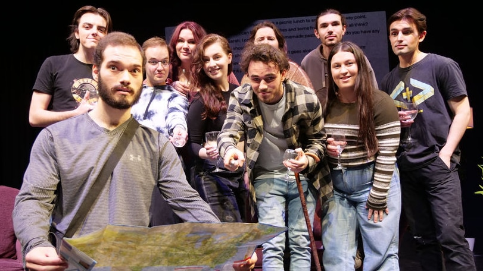

Artificially Intelligent Theatre Play

Recently, a play written entirely by an artificial intelligence website ChatGPT was rehearsed and performed for a paying audience at the University of Wollongong. This groundbreaking event showcased the potential of artificial intelligence in the theatre industry, while also highlighting its limitations.
What AI can do for Theatre?
AI can help in several aspects of theatre production. For example:
- Generating Ideas: AI can come up with unique and innovative ideas that no human writer could have thought of.
- Improving Scripts: AI can analyze scripts and suggest improvements in terms of pacing, character development, and dialogue.
- Creating Music and Sound Effects: AI can create original music and sound effects that perfectly fit the mood and tone of the play.
- Virtual Sets and Costumes: AI can generate realistic 3D models of sets and costumes that can be seen and modified in real-time during rehearsals.
Limitations of AI in Theatre
While AI has a lot of potential in the theatre industry, there are several areas where it falls short. For example:
- Emotional Complexity: AI lacks the ability to understand and convey complex emotions, which is essential for good storytelling.
- The Human Touch: AI cannot replace the human connection that is inherent in live theatre. Actors and audiences need to connect with each other on an emotional level, which cannot be replicated by machines.
- Unpredictable Creativity: AI works best when it has a clear set of rules to follow, but art is often about breaking those rules and doing something unpredictable and unique.
Conclusion
The performance of the AI-written play at the University of Wollongong was a milestone in the theatre industry. It showed that AI can contribute to the creative process in meaningful ways, but it also highlighted its limitations. As AI technology improves, it is likely that we will see more AI-generated content in the theatre world. However, it is important to remember that theatre is ultimately a human experience, and the emotional connection between performers and audiences is irreplaceable.
References
Hashtags
- #artificialintelligence
- #theatre
- #chatgpt
- #universityofwollongong
Category
Technology & Entertainment
Curated by Team Akash.Mittal.Blog
Share on Twitter Share on LinkedIn